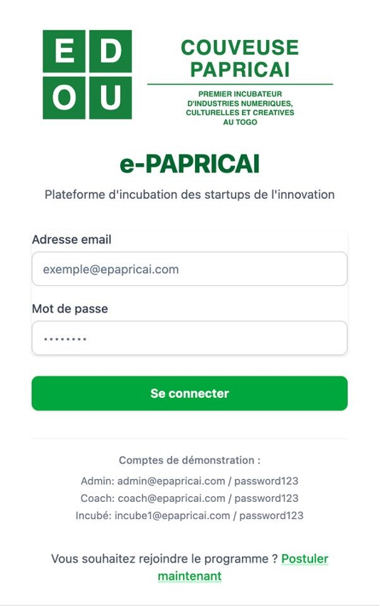
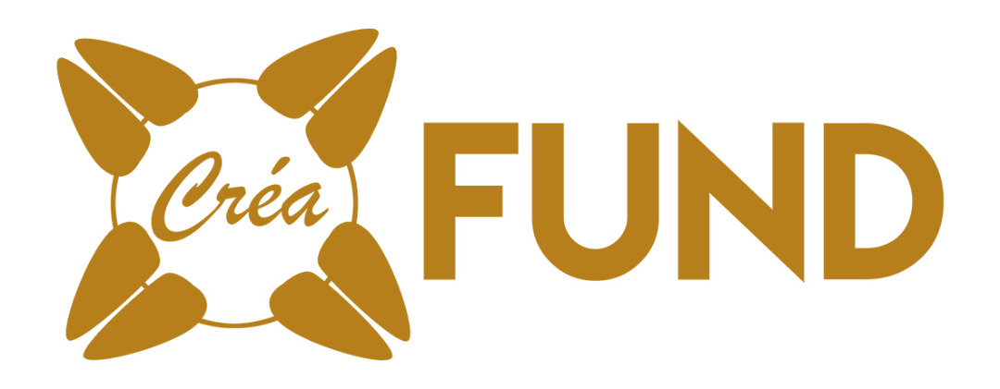

PAPRICAI a développé trois outils numériques propriétaires pour incuber à distance : former, accompagner et financer 40 entrepreneurs supplémentaires, partout en Afrique francophone, sans qu'ils aient à se déplacer à Lomé.
Une plateforme de formation en ligne pensée pour les réalités africaines : modules courts, vidéos compressées pour la 3G, parcours adaptés aux arts visuels, à la musique, au cinéma ou au numérique créatif.
Candidater pour y accéderValidation des acquis à chaque module. Certificat délivré en fin de parcours.
Avancez à votre rythme. Compatible mobile, peu gourmand en data.
Études de cas réels — projets togolais, béninois, burkinabè.
Coaches ICC en ligne pour répondre à vos questions sous 24h.

Pas besoin de Zoom externe. Planification, enregistrement, transcription.
Indicateurs business simples, mis à jour à chaque coaching.
Cohortes en discussion permanente. L'expertise circule entre porteurs.
Réseau SAECI : 60 structures, expertise sectorielle locale.
Pour les 40 entrepreneurs en distanciel, e-PAPRICAI est l'outil qui rapproche. Mise en relation avec un mentor ouest-africain expert de votre filière, visioconférences planifiées, suivi de progression, et accès à toute la cohorte en pair-à-pair.
Candidater pour y accéderCREAFUND permet aux porteurs ICC de financer leurs projets via une campagne en ligne en FCFA et en devises. Paiements mobile money intégrés (Flooz, T-Money, MTN Mobile Money), mentor financier dédié, contreparties culturelles aux contributeurs.
Candidater pour y accéder
Flooz, T-Money, MTN MoMo, Orange Money. Pas de friction pour vos contributeurs.
Chaque projet est validé par la couveuse avant publication. Confiance maximale.
Un expert vous accompagne sur le budget, la fiscalité, le pricing des contreparties.
Concerts, expos, livres, vêtements : chaque contributeur reçoit un fragment du projet.
IVIC vous forme. e-PAPRICAI vous accompagne. CREAFUND vous finance. Les trois outils travaillent ensemble — vos progrès dans IVIC alimentent votre profil e-PAPRICAI, votre coaching e-PAPRICAI prépare votre campagne CREAFUND.
Modules ICC sur IVIC. Compétences validées par badges.
Mentor e-PAPRICAI dédié. KPIs suivis, milestones validés.
Campagne CREAFUND. Mobile money + devises internationales.